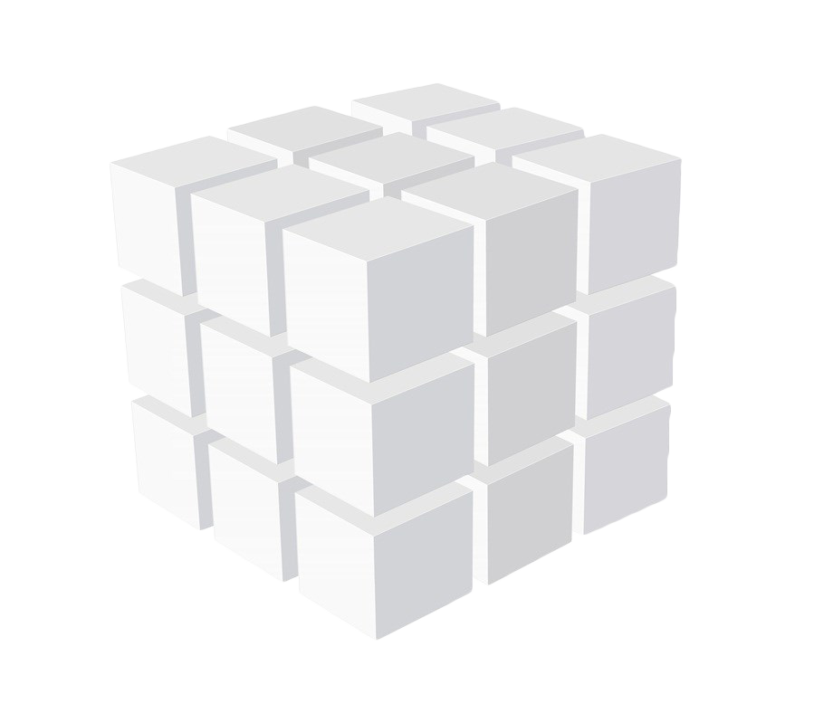

<ion-header>
  <ion-navbar color="primary">
    <ion-title>{{ cubeStack.titleDe }}</ion-title>
    <ion-buttons end>
      <!-- TODO: "openAddModal()" -->
      <button id="addBtn" (click)="openAddModal()">
        <ion-icon name="add"></ion-icon>
      </button>
    </ion-buttons>
  </ion-navbar>
</ion-header>

<ion-content>

  <ion-grid>
    <ion-row>
      <ion-col col-5>
        <ion-item no-lines>
          <div class="wrapper">
            <div>
              
              <div class="cube-title" style="text-align:center;">{{cubeStack.titleCn}}</div>
              <div class="cube-subtitle" style="text-align:center;">{{cubeStack.titleDe}}</div>
            </div>
          </div>
        </ion-item>
      </ion-col>
      <ion-col col-7>
        <ion-list class="card-cover-edit">
          <ion-item>
            <ion-input placeholder="{{cubeStack.titleCn}}" [(ngModel)]="cubeStack.titleCn" clearInput></ion-input>
          </ion-item>
          <ion-item>
            <ion-input placeholder="{{cubeStack.titleDe}}" [(ngModel)]="cubeStack.titleDe" clearInput></ion-input>
          </ion-item>
          <ion-item>
            <button class="cube-cover-edit-btn" ion-button small color="danger" round outline (click)="presentPopover($event)">
              <ion-icon class="cube-cover-icon" name="ios-trash-outline"></ion-icon>
            </button>
            <button class="cube-cover-edit-btn" ion-button small color="primary" round outline (click)="editCubeBag()">
              <ion-icon class="cube-cover-icon" name="ios-checkmark-circle-outline"></ion-icon>
            </button>
          </ion-item>
        </ion-list>
      </ion-col>
    </ion-row>
  </ion-grid>

  <hr>


  <ion-list no-lines>
    <ion-item-sliding *ngFor="let cube of cubeStack.cubes" #slidingItem>

      <ion-item (click)="openEditModal(cube)">
        <h2>{{cube.cubeTexts[0]}}</h2>
        <p>{{cube.cubeTexts[1]}}</p>
        <ion-note item-end>{{cube.date}}</ion-note>
      </ion-item>


      <ion-item-options side="left">
        <!-- TODO: openEditModal(cube)-->
        <button ion-button color="light" (click)="openEditModal(cube)" (click)="closeSlidingItem(slidingItem)">
          <ion-icon name="build"></ion-icon>
          &nbsp;&nbsp;edit&nbsp;&nbsp;
        </button>
        <button ion-button color="danger" (click)="removeCube(cube)">
          <ion-icon name="trash"></ion-icon>
          delete
        </button>
      </ion-item-options>

    </ion-item-sliding>
  </ion-list>

</ion-content>
